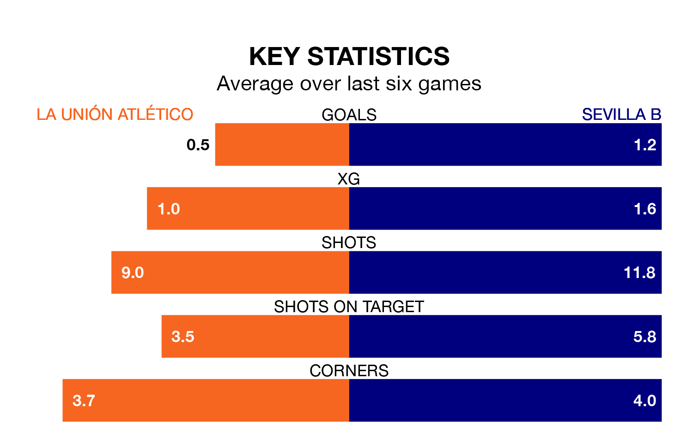

Mid-season relegation candidates La Unión Atlético face a challenge against high-flying Sevilla B on Sunday.
La Unión Atlético are 17th in the Segunda División RFEF Group 4 table, and have picked up six wins and one draw in their 20 games to date.
Sevilla B, meanwhile, are second in the standings with 41 points, having won 12 and drawn five, and are two points behind table-toppers Yeclano Deportivo.
With 36 goals in 20 games so far this season, Sevilla B are the league's highest scorers with 1.8 goals per game. And they are conceding fewer than average, letting in nine goals at a rate of 0.4 per game.
La Unión Atlético, meanwhile, are below average scorers, with 0.9 goals per game, compared to a league average of 1.0. They have conceded 1.3 goals per game.
La Unión Atlético are in terrible form in Segunda División RFEF Group 4, with no wins and a draw from their last six games.
With two wins and four draws over that period, the away team's form is much better – they have taken 10 points from 18, compared to the hosts' one.
La Unión Atlético's last match was on Sunday, a 1-0 loss against CD San Roque de Lepe.
Sevilla B beat Antoniano 3-0 last time out, also on January 28.
Updated: 14:12 (UTC), 02/02/24